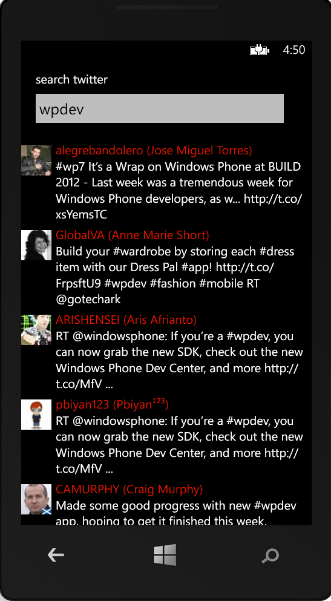
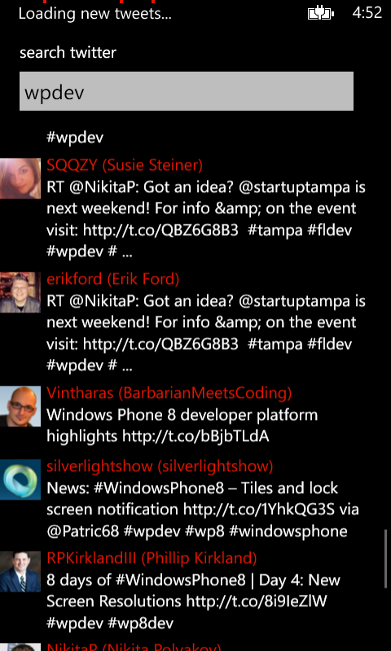

This sample demonstrates how to use Windows Phone 8.0 SDK's LongListSelector control to display Twitter search results as items in a long list and to load more items as the user approaches towards the end of list to simulate infinite scrolling.
Ensure you have downloaded the Windows Phone 8.0 SDK. Download the sample as a zipped solution. Unzip and build the solution.
Description
This sample calls the Twitter Search API to fetch items and populate them in the new managed XAML control LongListSelector added to Windows Phone 8 SDK. It them uses ItemRealized events to detect what items are being loaded and fetches the next set of result items as the user approaches the end of list scroll.
Here are couple screenshots from the sample
First Load -

Load more items as the user approaches end of list

The sample follows MVVM design pattern
More information will soon be available on a blog post. For ease of access/readability without download. Here are some code snippets
The correct Windows Phone UX to indicate loading more items. Binding the system tray visibility to IsLoading property of TwitterViewModel
void MainPage_Loaded(object sender, RoutedEventArgs e)
{
var progressIndicator = SystemTray.ProgressIndicator;
if (progressIndicator != null)
{
return;
}
progressIndicator = new ProgressIndicator();
SystemTray.SetProgressIndicator(this, progressIndicator);
Binding binding = new Binding("IsLoading") { Source = _viewModel };
BindingOperations.SetBinding(
progressIndicator, ProgressIndicator.IsVisibleProperty, binding);
binding = new Binding("IsLoading") { Source = _viewModel };
BindingOperations.SetBinding(
progressIndicator, ProgressIndicator.IsIndeterminateProperty, binding);
progressIndicator.Text = "Loading new tweets...";
}
void MainPage_Loaded(object sender, RoutedEventArgs e) { var progressIndicator = SystemTray.ProgressIndicator; if (progressIndicator != null) { return; } progressIndicator = new ProgressIndicator(); SystemTray.SetProgressIndicator(this, progressIndicator); Binding binding = new Binding("IsLoading") { Source = _viewModel }; BindingOperations.SetBinding( progressIndicator, ProgressIndicator.IsVisibleProperty, binding); binding = new Binding("IsLoading") { Source = _viewModel }; BindingOperations.SetBinding( progressIndicator, ProgressIndicator.IsIndeterminateProperty, binding); progressIndicator.Text = "Loading new tweets..."; }
Load more items as the user scrolls down, and approaches close to the end of list. Notice how event args make it so simple to detect what object was loaded and _offsetKnob allows you to tweak the performance.
void resultListBox_ItemRealized(object sender, ItemRealizationEventArgs e)
{
if (!_viewModel.IsLoading && resultListBox.ItemsSource != null &&
resultListBox.ItemsSource.Count
>= _offsetKnob)
{
if (e.ItemKind == LongListSelectorItemKind.Item)
{
if ((e.Container.Content as
TwitterSearchResult).Equals(resultListBox.
ItemsSource[resultListBox.ItemsSource.Count - _offsetKnob]))
{
Debug.WriteLine("Searching for {0}", _pageNumber);
_viewModel.LoadPage(_searchTerm, _pageNumber++);
}
}
}
}
void resultListBox_ItemRealized(object sender, ItemRealizationEventArgs e) { if (!_viewModel.IsLoading && resultListBox.ItemsSource != null && resultListBox.ItemsSource.Count >= _offsetKnob) { if (e.ItemKind == LongListSelectorItemKind.Item) { if ((e.Container.Content as TwitterSearchResult).Equals(resultListBox. ItemsSource[resultListBox.ItemsSource.Count - _offsetKnob])) { Debug.WriteLine("Searching for {0}", _pageNumber); _viewModel.LoadPage(_searchTerm, _pageNumber++); } } } }
//for demo purposes only, don't ship your app with this line of code.
System.Threading.Thread.Sleep(700);
//for demo purposes only, don't ship your app with this line of code. System.Threading.Thread.Sleep(700);
Windows Phone Development Platform's XAML Controls team helped review the technical content of the sample.